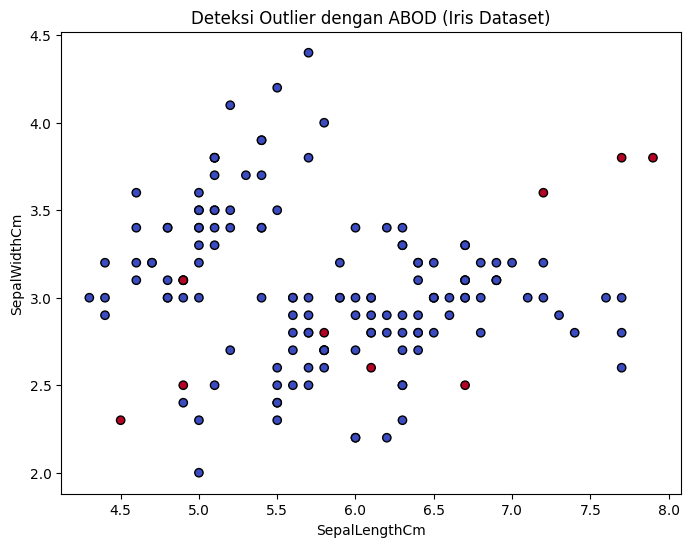

Data Preprocessing#
# Install library PyOD (untuk ABOD)
!pip install pyod
# Import library
import pandas as pd
import matplotlib.pyplot as plt
from pyod.models.abod import ABOD
# 1. Baca data CSV
df = pd.read_csv("Data/Iris.csv") # ganti path jika perlu
print(df.head())
# 2. Ambil fitur numerik (buang kolom non-numerik seperti 'Species')
X = df.drop(columns=['Species', 'Id'])
# 3. Jalankan ABOD
clf = ABOD(contamination=0.05) # 5% diasumsikan outlier
clf.fit(X)
# 4. Prediksi outlier
df['outlier'] = clf.predict(X) # 0 = normal, 1 = outlier
df['score'] = clf.decision_function(X) # skor outlier
print(df.head())
# 5. Visualisasi (contoh: SepalLengthCm vs SepalWidthCm)
plt.figure(figsize=(8,6))
plt.scatter(df['SepalLengthCm'], df['SepalWidthCm'],
c=df['outlier'], cmap='coolwarm', edgecolor='k')
plt.xlabel("SepalLengthCm")
plt.ylabel("SepalWidthCm")
plt.title("Deteksi Outlier dengan ABOD (Iris Dataset)")
plt.show()
Requirement already satisfied: pyod in /workspaces/PSD/pycaret-env/lib/python3.11/site-packages (2.0.5)
Requirement already satisfied: joblib in /workspaces/PSD/pycaret-env/lib/python3.11/site-packages (from pyod) (1.3.2)
Requirement already satisfied: matplotlib in /workspaces/PSD/pycaret-env/lib/python3.11/site-packages (from pyod) (3.7.5)
Requirement already satisfied: numpy>=1.19 in /workspaces/PSD/pycaret-env/lib/python3.11/site-packages (from pyod) (1.26.4)
Requirement already satisfied: numba>=0.51 in /workspaces/PSD/pycaret-env/lib/python3.11/site-packages (from pyod) (0.61.2)
Requirement already satisfied: scipy>=1.5.1 in /workspaces/PSD/pycaret-env/lib/python3.11/site-packages (from pyod) (1.11.4)
Requirement already satisfied: scikit-learn>=0.22.0 in /workspaces/PSD/pycaret-env/lib/python3.11/site-packages (from pyod) (1.4.2)
Requirement already satisfied: llvmlite<0.45,>=0.44.0dev0 in /workspaces/PSD/pycaret-env/lib/python3.11/site-packages (from numba>=0.51->pyod) (0.44.0)
Requirement already satisfied: threadpoolctl>=2.0.0 in /workspaces/PSD/pycaret-env/lib/python3.11/site-packages (from scikit-learn>=0.22.0->pyod) (3.6.0)
Requirement already satisfied: contourpy>=1.0.1 in /workspaces/PSD/pycaret-env/lib/python3.11/site-packages (from matplotlib->pyod) (1.3.3)
Requirement already satisfied: cycler>=0.10 in /workspaces/PSD/pycaret-env/lib/python3.11/site-packages (from matplotlib->pyod) (0.12.1)
Requirement already satisfied: fonttools>=4.22.0 in /workspaces/PSD/pycaret-env/lib/python3.11/site-packages (from matplotlib->pyod) (4.59.2)
Requirement already satisfied: kiwisolver>=1.0.1 in /workspaces/PSD/pycaret-env/lib/python3.11/site-packages (from matplotlib->pyod) (1.4.9)
Requirement already satisfied: packaging>=20.0 in /workspaces/PSD/pycaret-env/lib/python3.11/site-packages (from matplotlib->pyod) (25.0)
Requirement already satisfied: pillow>=6.2.0 in /workspaces/PSD/pycaret-env/lib/python3.11/site-packages (from matplotlib->pyod) (11.3.0)
Requirement already satisfied: pyparsing>=2.3.1 in /workspaces/PSD/pycaret-env/lib/python3.11/site-packages (from matplotlib->pyod) (3.2.4)
Requirement already satisfied: python-dateutil>=2.7 in /workspaces/PSD/pycaret-env/lib/python3.11/site-packages (from matplotlib->pyod) (2.9.0.post0)
Requirement already satisfied: six>=1.5 in /workspaces/PSD/pycaret-env/lib/python3.11/site-packages (from python-dateutil>=2.7->matplotlib->pyod) (1.17.0)
Id SepalLengthCm SepalWidthCm PetalLengthCm PetalWidthCm Species
0 1 5.1 3.5 1.4 0.2 Iris-setosa
1 2 4.9 3.0 1.4 0.2 Iris-setosa
2 3 4.7 3.2 1.3 0.2 Iris-setosa
3 4 4.6 3.1 1.5 0.2 Iris-setosa
4 5 5.0 3.6 1.4 0.2 Iris-setosa
Id SepalLengthCm SepalWidthCm PetalLengthCm PetalWidthCm Species \
0 1 5.1 3.5 1.4 0.2 Iris-setosa
1 2 4.9 3.0 1.4 0.2 Iris-setosa
2 3 4.7 3.2 1.3 0.2 Iris-setosa
3 4 4.6 3.1 1.5 0.2 Iris-setosa
4 5 5.0 3.6 1.4 0.2 Iris-setosa
outlier score
0 0 -295.138889
1 0 -339.506173
2 0 -70.492908
3 0 -153.472222
4 0 -67.661180

import sys, pycaret
print("Python:", sys.version)
print("PyCaret:", pycaret.__version__)
Python: 3.11.13 (main, Jun 4 2025, 08:57:30) [GCC 13.3.0]
PyCaret: 3.3.2
import pandas as pd
iris = pd.read_csv("Data/Iris.csv")
iris = iris.drop(columns=["Id"], errors="ignore") # drop kolom Id kalau ada
# Ambil hanya kolom numerik
iris_num = iris[['SepalLengthCm','SepalWidthCm','PetalLengthCm','PetalWidthCm']]
print(iris_num.dtypes)
iris_num.head()
SepalLengthCm float64
SepalWidthCm float64
PetalLengthCm float64
PetalWidthCm float64
dtype: object
| SepalLengthCm | SepalWidthCm | PetalLengthCm | PetalWidthCm | |
|---|---|---|---|---|
| 0 | 5.1 | 3.5 | 1.4 | 0.2 |
| 1 | 4.9 | 3.0 | 1.4 | 0.2 |
| 2 | 4.7 | 3.2 | 1.3 | 0.2 |
| 3 | 4.6 | 3.1 | 1.5 | 0.2 |
| 4 | 5.0 | 3.6 | 1.4 | 0.2 |
import plotly.io as pio
pio.renderers.default = "iframe_connected"
from pycaret.anomaly import setup
exp = setup(
data=iris_num,
session_id=123
)
| Description | Value | |
|---|---|---|
| 0 | Session id | 123 |
| 1 | Original data shape | (150, 4) |
| 2 | Transformed data shape | (150, 4) |
| 3 | Numeric features | 4 |
| 4 | Preprocess | True |
| 5 | Imputation type | simple |
| 6 | Numeric imputation | mean |
| 7 | Categorical imputation | mode |
| 8 | CPU Jobs | -1 |
| 9 | Use GPU | False |
| 10 | Log Experiment | False |
| 11 | Experiment Name | anomaly-default-name |
| 12 | USI | b00b |
from pycaret.anomaly import create_model, assign_model
# Model 1: Isolation Forest
iforest = create_model('iforest')
out_iforest = assign_model(iforest)
# Model 2: KNN
knn = create_model('knn')
out_knn = assign_model(knn)
# Model 3: LOF
lof = create_model('lof')
out_lof = assign_model(lof)
print("Isolation Forest outliers:", out_iforest['Anomaly'].sum())
print("KNN outliers:", out_knn['Anomaly'].sum())
print("LOF outliers:", out_lof['Anomaly'].sum())
Isolation Forest outliers: 8
KNN outliers: 8
LOF outliers: 8
import plotly.express as px
# Pilih hasil salah satu model, misalnya Isolation Forest
df_plot = out_iforest.copy()
fig = px.scatter_3d(
df_plot,
x='SepalLengthCm',
y='SepalWidthCm',
z='PetalLengthCm',
color=df_plot['Anomaly'].map({0: 'Normal', 1: 'Outlier'}),
symbol=df_plot['Anomaly'].map({0: 'circle', 1: 'x'}),
opacity=0.7,
title="3D Outlier Detection (Isolation Forest)"
)
fig.update_traces(marker=dict(size=6))
fig.show()